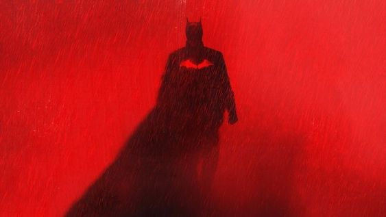

SMK Negeri 9 Medan
SMK Negeri 9 Medan

Mhd. Raditya Sabanna
XII RPL 4
SMK Negeri 9 Medan
XII RPL 4


SMKN 9 Medan adalah tempat terbaik untuk mengembangkan potensi Anda.
Kembali ke Profil SekolahJl. Patriot No.20 A, Lalang, Kec. Medan Sunggal, Kota Medan, Sumatera Utara
(061) 845-4350
Jika Anda memiliki pertanyaan atau ingin menghubungi kami, jangan ragu untuk mengisi formulir di bawah ini:
Jika Anda memiliki pertanyaan atau ingin menghubungi kami, silakan hubungi kami di nomor telepon di atas atau kunjungi situs web kami.